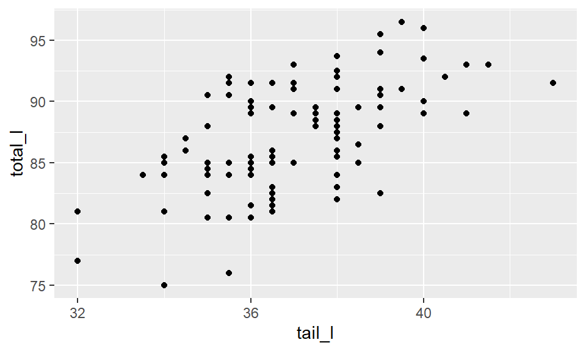
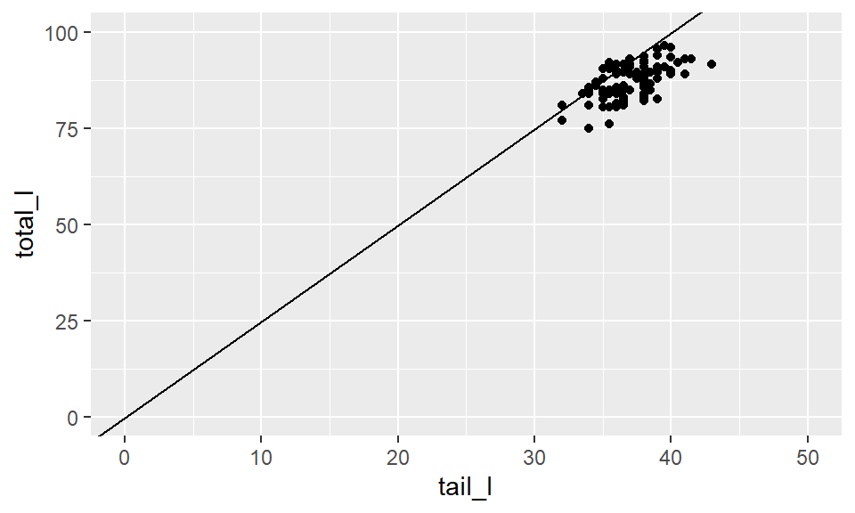
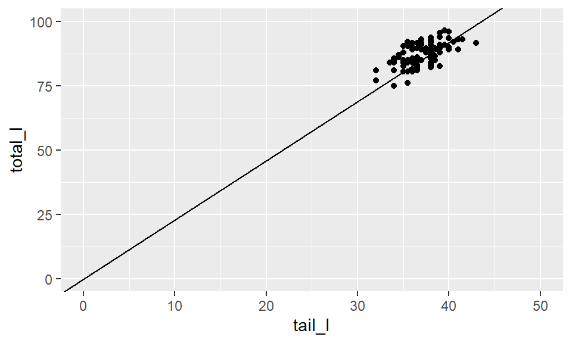
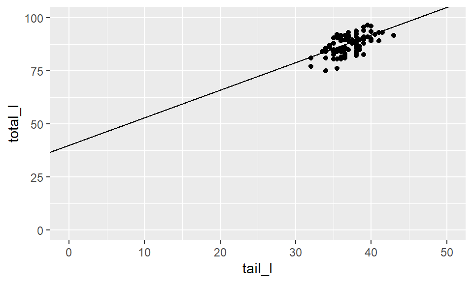
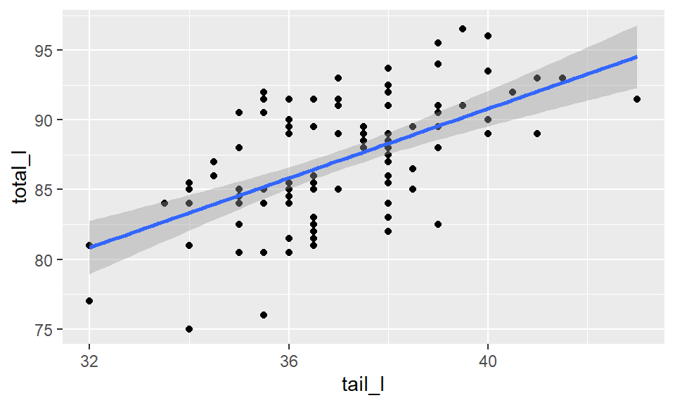
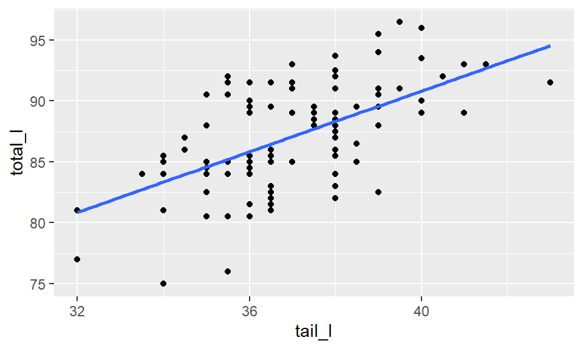
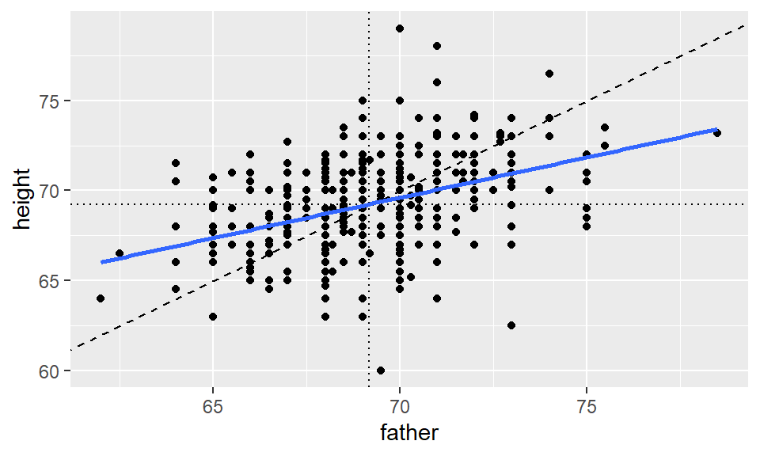

Introduction
In this tutorial, you’ll learn about simple linear regression - a fundamental statistical technique for understanding relationships between two numeric variables. By the end, you’ll be able to:
- Visualize and interpret regression lines
- Understand the least squares criterion
- Fit and interpret linear models in R
- Distinguish between regression modeling and regression to the mean
Visualization of linear models
Before we get into the mathematical specification for a regression model, let’s build some intuition about what a regression line is.
In this scatterplot, we see the relationship between the total length of a possum, and the corresponding length of its tail. Clearly there is not a perfect relationship here: the total length of the possum varies even for possums with the same tail length. But we still have some intuitive desire to describe the relationship with a line.
ggplot(data = possum, aes(y = total_l, x = tail_l)) +
geom_point()
Picking a line of best fit
Through the origin
In the plot below, we’ve superimposed a line that goes through the origin - that is, the point where both \(x\) and \(y\) are equal to zero. The line has a slope of 2.5 centimeters (of total length) per centimeter (of tail length). We notice that, in some sense, the line does go “through” the points, but doesn’t capture the general trend as best we could imagine.

Through the origin, better fit
This line also goes through the origin, but has a gentler slope of 2.3 cm (of total length) per cm (of tail length). It seems like a “better” fit, since it cuts through the points in a more central way.

Not through the origin
But why should we force the line to go through the origin? Here is a line that has a \(y\)-intercept of 40 cm, and an even gentler slope of 1.3 . It seems like an even better fit still.
Do you think you could find an even better fit? In order to do so, you need some criteria for judging which line fits better. In particular, you need a numerical measurement of how good the fit of each possible line is.

The “best” fit line
Notice how each line captures the data differently: - Through origin (slope 2.5): Too steep, misses the pattern - Through origin (slope 2.3): Better, but still constrained - With intercept (slope 1.3): Best captures the overall trend
Question to consider: Why might forcing a line through the origin be unrealistic for this data?
The simple linear regression model for a numeric response as a function of a numeric explanatory variable can be visualized on the corresponding scatterplot by a straight line.
In regression, we use the least squares criterion to determine the best fit line. Statisticians have proven that (apart from pathological examples) if we seek the line that tries to minimize the sum of the squared distances between the line and a set of data points, a unique line exists. That line is called the “least squares regression line.”
We might consider linear regression to be a specific example of a
larger class of smooth models. The geom_smooth()
function allows you to draw such models over a scatterplot of the data
itself. This technique is known as visualizing the model in the data
space. The method argument to
geom_smooth() allows you to specify what class of smooth
model you want to see. Since we are exploring linear models, we’ll set
this argument to the value "lm".
We can add the line to our plot using the geom_smooth()
function and specifying the method argument to be
"lm", which stands for “linear model”.
ggplot(data = possum, aes(y = total_l, x = tail_l)) +
geom_point() +
geom_smooth(method = "lm")
Ignore standard errors
Note that by default, this will draw the regression line in blue,
with gray shading for the standard error associated with the line. That
should not concern us just yet, so we can turn it off by setting the
se argument to FALSE.
ggplot(data = possum, aes(y = total_l, x = tail_l)) +
geom_point() +
geom_smooth(method = "lm", se = FALSE)
You’ll explore the “best fit” line on your own in these next exercise.
Your turn!
Using the bdims dataset, create a scatterplot of body
weight (wgt) as a function of height (hgt) for
all individuals in the bdims dataset.
Then, add a linear regression line on top of the scatterplot.
ggplot(data = ___, aes(x = ___, y = ___)) +
___ +
___(method = ___, se = FALSE) ggplot(data = bdims, aes(x = hgt, y = wgt)) +
geom_point() +
___(method = ___, se = FALSE) ggplot(data = bdims, aes(x = hgt, y = wgt)) +
geom_point() +
geom_smooth(method = ___, se = FALSE)ggplot(data = bdims, aes(x = hgt, y = wgt)) +
geom_point() +
geom_smooth(method = "lm", se = FALSE)Uniqueness of least squares regression line
The least squares criterion implies that the slope of the regression
line is unique. In practice, the slope is computed by R. In this
exercise, you will experiment with trying to find the optimal value for
the regression slope for weight as a function of height in the
bdims dataset via trial-and-error.
We’ve built a custom function for you called add_line(),
which takes a single argument: the proposed slope coefficient and plots
it on the scatterplot of height and weight.
Use the code chunk below to experiment with different values (to the
nearest integer) of the my_slope parameter until you find
one that you think fits best.
add_line(my_slope = ___) Input your best guess for the slope of the regression line between height and weight. # Estimate optimal value of my_slope
add_line(my_slope = 1)Look at your scatterplot with the regression line. Consider: - Does the relationship appear linear? - Are there any unusual observations? - How much variability is around the line?
Understanding Linear Models
Models are ubiquitous in statistics. In many cases, we assume that the value of our response variable is some function of our explanatory variable, plus some random noise. The latter term is important, and in a philosophical sense, is the focus of statistical thinking.
What we are saying here is that there is some mathematical function \(f\), which can translate values of one variable into values of another, except that there is some randomness in the process. What often distinguishes statisticians from other quantitative researchers is the way that we try to model that random noise.
\[ response = f(explanatory) + noise \]
Linear model
For a linear regression model, we simply assume that \(f\) takes the form of a linear function. Thus, our model describes the value of the response variable in terms of what creates a line (an intercept and a slope).
\[ response = intercept + slope \cdot explanatory + noise \]
Regression model
In a regression model, we use Greek letters for the intercept and slope, indicating that they are population parameters which we hope to estimate with our sample.
The intercept is notated as \(\beta_0\) and the slope is notated as \(\beta_1\). The noise term in a regression is often denoted \(\epsilon\). In a regression, we assume that the noise terms have a Normal distribution, centered at 0 with a known standard deviation of \(\sigma_\epsilon\). The equation below is what we call our “population” regression equation, symbolizing that it is for the population we are interested in studying.
\[ Y = \beta_0 + \beta_1 \cdot X + \epsilon \,, \qquad \epsilon \sim N(0, \sigma_\epsilon) \]
Fitted values
When we estimate our population regression equation with data, we need to indicate that our intercept and slope values are estimates for the true population intercept and slope.
We do this by changing our equation in four ways:
- \(Y\) is changed to \(\hat{y}\), as we are now estimating the mean response rather than an individual response.
- The error terms (\(\epsilon\)) are removed, as we are no longer modeling individual responses.
- The \(\beta_0\) is replaced with \(\widehat{\beta_0}\), notating that this is an estimate of the true intercept.
- The \(\beta_1\) is replaced with \(\widehat{\beta_1}\), notating that this is an estimate of the true slope.
The resulting model looks like:
\[ \hat{y} = \hat{\beta}_0 + \hat{\beta}_1 \cdot X \]
Residuals
The difference between what was observed in the data and what was predicted from the regression line is what we call a “residual.” Obervations that lie above the regression line exceeded their predicted value and have a positive residual. Values below the regression line are less than their predicted value and have a negative residual.
The residuals are the realization of the noise term from the population regression equation. While \(\epsilon\) and \(e\) play analogous roles in the regression equation, \(\epsilon\) is an unknown, true quantity, while \(e\) is a known, estimate of that quantity.
\[ e = Y - \hat{Y} \]
Fitting procedure
While we won’t delve into the specifics of the least squares fitting procedure, we will outline what it does. It is intuitive that we would want a line that has small residuals. As discussed in the Introduction to Modern Statistics textbook, it is common practice to choose a line that minimizes the sum of squared residuals.
In this procedure, the residual for each observation is squared and all of the squared residuals are added up. You can think of the use of the squared error as saying that “a residual twice as large as another residual is more than twice as bad.” In other words, overestimating by 4 is more than twice as bad as overestimating by 2.
Least squares
Actually computing the fitted coefficients is usually a messy business for which the computer is much better suited than we are, so we won’t discuss that here. You should know that the least squares fitting procedure is a well-understood, relatively straightforward, deterministic process that can be computed efficiently. It will always return a unique solution, except in rare, unrealistic cases.
Your regression line will always have two attributes, (1) the residuals will always sum to 0, and (2) the point \((\bar{x}, \bar{y})\) is guaranteed to lie on the regression line. Given your understanding of correlation, it should not surprise you to learn that the regression slope and the correlation coefficient are closely-related. In fact, they are proportional to one another.
You should also be aware that there are other criteria—apart from least squares—for choosing a line of “best” fit, but we won’t talk about them in this tutorial.
From population to sample
When we fit a regression model with data, we’re estimating unknown population parameters. Here’s how our notation changes:
| Concept | Population | Sample Estimate |
|---|---|---|
| Response | \(Y\) | \(\hat{y}\) |
| Intercept | \(\beta_0\) | \(\hat{\beta}_0\) |
| Slope | \(\beta_1\) | \(\hat{\beta}_1\) |
| Error/Residual | \(\epsilon\) | \(e\) |
Key concepts
It’s worth reviewing some key concepts about regression models.
- \(\hat{Y}\) is the mean value of
the response, for a given value of \(X\).
- \(\hat{Y}\) is our best guess for the true value of \(Y\) given what we know about \(X\).
- \(\hat{\beta}\)’s are estimates of
true, unknown \(\beta\)’s.
- The estimated intercept and slope is our best guess of the true value of \(\beta_0\) and \(\beta_1\).
- Residuals (\(e\)’s) are estimates
of true, unknown \(\epsilon\)’s.
- The residuals are estimates of the true, unknown noise.
- “error” may be a misleading term—better: noise.
You’ll put your understanding of regression to use in these next exercises.
Your turn!
Consider a linear regression model of the form:
\[ Y = \beta_0 + \beta_1 \cdot X + \epsilon \,, \text{ where } \epsilon \sim N(0, \sigma_{\epsilon}) \,. \]
The slope coefficient is:
\(Y\)
\(\beta_0\)
\(\beta_1\)
\(\epsilon\)
Regression model output terminology
The fitted model for the poverty rate of U.S. counties as a function of high school graduation rate is:
\[ \widehat{poverty} = 64.594 - 0.591 \cdot hs_{grad} \]
Fitting a linear model “by hand”
Recall the simple linear regression model:
\[ y = b_0 + b_1 \cdot x \]
Two facts enable you to compute the slope \(b_1\) and intercept \(b_0\) of a simple linear regression model from some basic summary statistics.
First, the slope can be defined as:
\[ b_1 = r_{x,y} \cdot \frac{s_y}{s_x} \]
where \(r_{x,y}\) represents the
correlation (cor()) of \(x\) and \(y\) and \(s_x\) and \(s_y\) represent the standard deviation
(sd()) of \(x\) and \(y\), respectively.
Second, the point \((\bar{x}, \bar{y})\) is always on the least squares regression line, where \(\bar{x}\) and \(\bar{y}\) denote the average of \(x\) and \(y\), respectively.
In this exercise, you will find the slope and intercept of the least squares regression line for body weight (\(y\)) as a function of height (\(x\)). But, you might need to do some algebra to solve for \(b_0\)!
The bdims_summary table has been added to your
workspace. Use the glimpse() function to preview what the
table looks like!
# Print bdims_summaryNow, use mutate() and some algebra to add the
slope and intercept to the
bdims_summary table.
bdims_summary |>
mutate(slope = ___,
intercept = ___)## Remember the slope can be calculated from
## 1. the correlation
## 2. the sd of height and weight
bdims_summary |>
mutate(slope = r * (sd_wgt / sd_hgt),
intercept = ___)## Remember that x-bar and y-bar lie on the regression line!
bdims_summary |>
mutate(slope = r * (sd_wgt / sd_hgt),
intercept = mean_wgt - ___)## The intercept formula comes from: y = b_0 + b_1 * x
## Rearranging: b_0 = y - b_1 * x
## Using means: b_0 = mean_y - slope * mean_x
bdims_summary |>
mutate(slope = r * sd_wgt / sd_hgt,
intercept = mean_wgt - slope * mean_hgt)Quick Review
You’ve learned how to:
✓ Visualize regression lines with
geom_smooth(method = "lm") ✓ Understand that the least
squares line minimizes \(\sum e^2\) ✓
Calculate slope as \(r \cdot
\frac{s_y}{s_x}\) ✓ Interpret fitted values (\(\hat{y}\)) and residuals (\(e\))
Next, we’ll explore a related but distinct concept: regression to the mean.
Regression vs. regression to the mean
Heredity
In the late 19th century, Sir Francis Galton developed much of the theory surrounding correlation and regression. One of the more enduring concepts is “regression to the mean.” Here we note that “regression to the mean” is a distinct concept from “linear regression”, which is the focus of this tutorial. But “regression to the mean” is an important statistical concept in its own right, so we will explore it here so that you can appreciate the difference.
As an example of Galton’s “regression to the mean”, consider analyzing the heights of the children of NBA players.
As always, it’s best to start with a question: Do tall men tend to beget tall sons? Do tall women tend to have tall daughters? You might consider this question in the context of NBA and WNBA players. Do you suspect that children of NBA and WNBA players are likely to be tall?
Galton’s data
The answer turns out to be “yes, but not as tall as their fathers.” This effect is what Galton deemed “regression to the mean”. Another way of thinking about this is that unusual phenomena are likely to become more common over time.
In the plot, we see the relationship between the heights of a group of 465 men that Galton measured in the 1880s, and their fathers. The height of the son is on the \(y\) axis, while the height of the corresponding father is on the \(x\) axis. The diagonal indicates sons who are as tall as their fathers. The slope of the regression line—shown in blue—is more gentle. This reflects the observation that while tall fathers are still likely to have tall sons, the sons are not likely to be as tall as their fathers. Their height has been “regressed” towards the mean height.
In the plot below, pay attention to: - The blue regression line (what actually happens) - The dashed diagonal line (if children were exactly as tall as parents) - The gap between them (evidence of regression to the mean)
If tall fathers had equally tall sons, what would the slope be? Compare this to what you observe.

It may be tempting to think that regression to the mean implies that men are getting shorter, but this is not true. Even in this sample, the mean height of the sons was the same—to the nearest tenth of an inch—to those of the fathers.
Regression modeling
This tutorial is about simple linear regression modeling. Typically, regression models combine some explanatory variables into an estimate for a single, numerical response variable. We are pursuing least squares regression models, but there are any number of alternative regression model specifications. Additionally, there are models like “regression trees” that also estimate a single, numerical response, but do not use a linear framework as we do in this tutorial.
“Regression”: techniques for modeling a quantitative response can
include a variety of models including:
- Least squares
- Weighted
- Generalized
- Nonparametric
- Ridge
- Bayesian
- …
The next exercises will allow you to explore Galton’s data on your own.
Regression to the mean
Regression to the mean is a concept attributed to Sir Francis Galton. The basic idea is that extreme random observations will tend to be less extreme upon a second trial. This is simply due to chance alone. While “regression to the mean” and “linear regression” are not the same thing, we will examine them together in this exercise.
One way to see the effects of regression to the mean is to compare the heights of parents to their children’s heights. While it is true that tall mothers and fathers tend to have tall children, those children tend to be less tall than their parents, relative to average. That is, fathers who are 3 inches taller than the average father tend to have children who may be taller than average, but by less than 3 inches.
The Galton_men and Galton_women datasets
contain data originally collected by Galton himself in the 1880s on the
heights of men and women, respectively, along with their parents’
heights.
Compare the slope of the regression line to the slope of the diagonal line. What does this tell you?
- Create a scatterplot of the height of men as a function of their father’s height. Add the simple linear regression line and a diagonal line (with slope equal to 1 and intercept equal to 0) to the plot.
- Create a scatterplot of the height of women as a function of their mother’s height. Add the simple linear regression line and a diagonal line to the plot.
# Height of children vs. height of father
ggplot(data = ___, aes(x = ___, y = ___)) +
geom_point() +
geom_abline(slope = ___, intercept = ___) +
geom_smooth(method = ___, se = FALSE)
# Height of children vs. height of mother"Use the scaffolding for the first scatterplot to generate your
second scatterplot."# Height of children vs. height of father
ggplot(data = Galton_men, aes(x = father, y = height)) +
geom_point() +
geom_abline(slope = 1, intercept = 0) +
geom_smooth(method = "lm", se = FALSE)
# Height of children vs. height of mother
ggplot(data = Galton_women, aes(x = mother, y = height)) +
geom_point() +
geom_abline(slope = 1, intercept = 0) +
geom_smooth(method = "lm", se = FALSE)“Regression” in the parlance of our time
In an opinion piece about nepotism published in The New York Times in 2015, economist Seth Stephens-Davidowitz wrote that:
“Regression to the mean is so powerful that once-in-a-generation talent basically never sires once-in-a-generation talent. It explains why Michael Jordan’s sons were middling college basketball players and Jakob Dylan wrote two good songs. It is why there are no American parent-child pairs among Hall of Fame players in any major professional sports league.”
Wrap-up
Key takeaways
- Simple linear regression models the relationship between two numeric variables
- The least squares criterion finds the unique “best fit” line
- Regression to the mean is a statistical phenomenon, not the same as regression modeling
- In R, we visualize regression with
geom_smooth(method = "lm")
Congratulations!
You have successfully completed this activity. You need to generate a hash for submission, click “Next Topic”, generate the hash, and submit it on Blackboard.
Submit